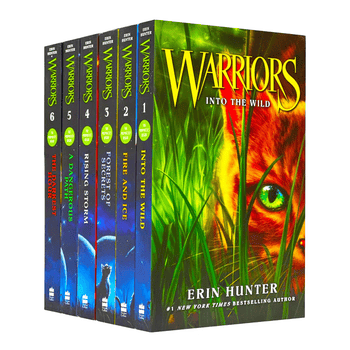

Warriors, or better known as Warrior Cats, is a fictional novel series based on the tales and adventures of feral cats. Written by Erin Hunter, it was first published in January of 2003 and continues to have new editions released year after year. Although aimed towards middle grade readers, many young adults and older readers have taken a liking to the books due to the intense drama each arc brings to the storyline. As of August 2025, there are over 120 published books.
As of 2025, there are nine arcs with six books in each arc. Outside of the main series (consisting of 49 released books), there are 17 standalone Super Editions (500 page long books), 8 field guides, 17 manga volumes, 3 graphic novels, and 7 novellas. Below are the arcs in chronological order.
Author the books are written under the name Erin Hunter, there are actually several different authors who have contributed to the series over the years. Below are the individuals who have written under the pseudonym:
| Name | Start Year | End Year |
|---|---|---|
| Victoria Holmes | 2003 | 2017 |
| Kate Cary | 2003 | 2024 |
| Cherith Baldry | 2003 | Current |
| Tui T. Sutherland | 2004 | 2009 |
| Inbali Iserles | 2009 | 2017 |
| Gillian Philip | 2009 | 2020 |
| Clarissa Hutton | 2017 | Current |
| Rosie Best | 2015 | Current |
| Dan Jolley | 2007 | 2010 |